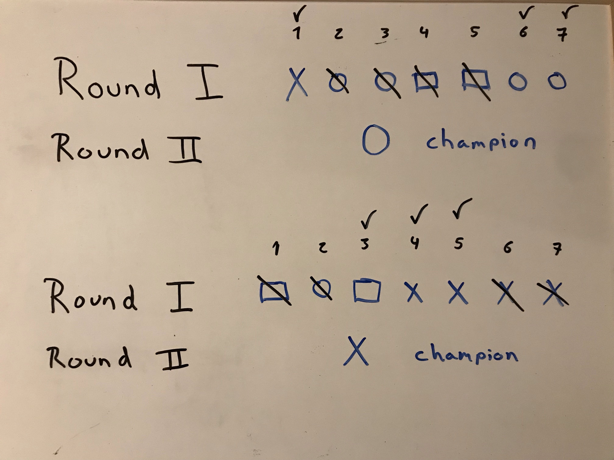

RPS - Drawing Game (With Strategic Decision)
In RPS - Drawing Game each object in the traditional Rock, Paper, Scissors game will be represented by a symbol. Rock will be represented by a circle, Paper by a square, and Scissors by an “X”.
2 Players.
Round 1:
Once the players say “Rock, Paper, Scissors shoot” each player will draw 7 symbols in a line, these will be played out in seven short “clashes” (Figure 1). Once the drawing of seven symbols is complete the players will battle it out in the sequence in which each symbol was drawn. Whoever wins most of these clashes wins the round (Figure 2). If both win the same amount, there is no winner of Round 1. If a player loses all seven clashes, they automatically lose the game.
Round 2:
The end of Round 1 will determine a “Champion” based on the “survivors” of the seven drawn symbols. The majority symbol of the survivors will be your Champion, or in case of equal amounts of survivor symbols, it will be the first in the sequential order. For example, if a player has won three of the 7 “clashes” and these surviving (or victorious) symbols are 1 circle and two squares, the “champion” will be a square. Round 2 merely pits both champions against each other (Figure 3).
Round 3 (Tie-breaker):
If both players each win a round they meet in a tie-breaker round. Each player will try to guess what their opponent will choose in a short round of classic RPS by writing it down. If correctly guessed that player will be the winner. If no one guesses or both guess correctly, this quick tie breaker continues until one of the players is victorious (Figure 4).
Figures:
(Both players’ drawings are shown together here for convenience, but they should be separate when playing the game)
Strategic Decision:
An element of strategic skill that can be used for RPS is a tradeoff. In RPS, a player can opt out of the 7 clashes and instead create a “quick” champion out of the symbols (sort of like a Mecha) for the next round with only 2 symbols instead of 3. The advantage is a 1 creativity point which will be added to the first round score. The disadvantage is you can only use 2 instead of the 3 symbols allotted.
For strategy, a player could identify and anticipate what their opponent will choose. Statistically, playing scissors first is a great strategic move since it wins most often according to psychology. If your opponent played scissors, chances are your opponent will play scissors again. Anticipate your opponents moves and play rock to crush scissors. Rock is also chosen predominantly by males. With these statistics you could “risk” it by following these rules. “Mirroring” your opponent is also another option. Play what your opponent just played in the same sequence. They may flip what they have already played.